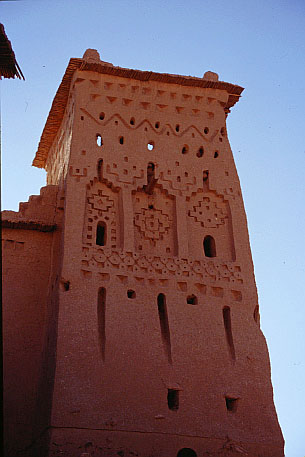
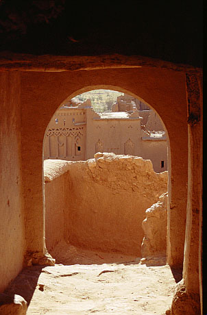
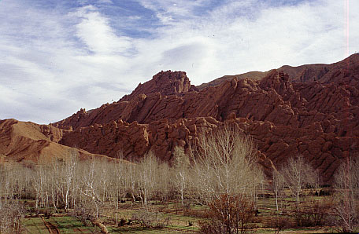
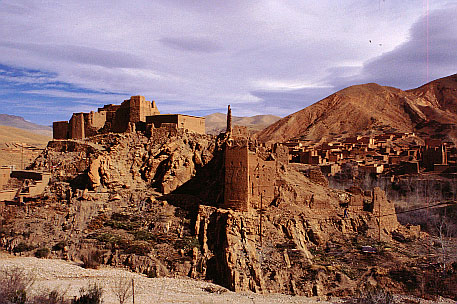

 Ait-Benhadu kazbasi kulesi / Ait-Benhaddou kasbah tower
 Ait-Benhadu kazbasinda bir sokak / Ait-Benhaddou kasbah street
 Dades vadisi / Dades gorge
 Dades vadisinde bir kazba / Kasbah in the Dades gorge